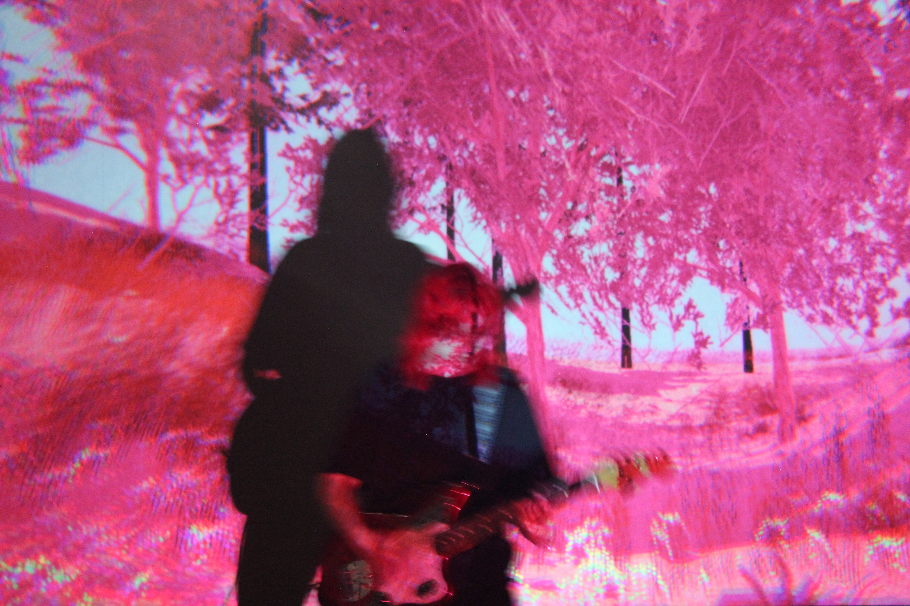
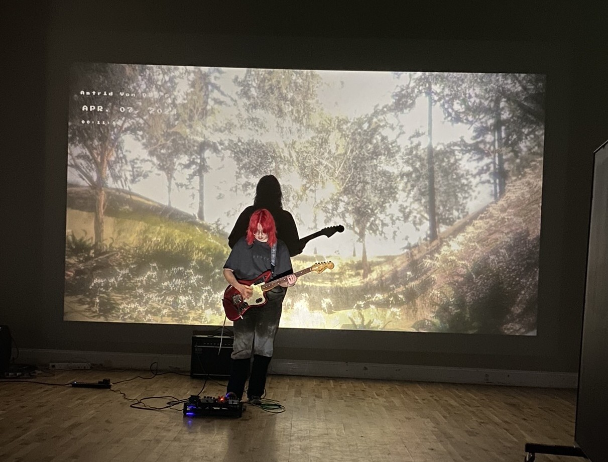
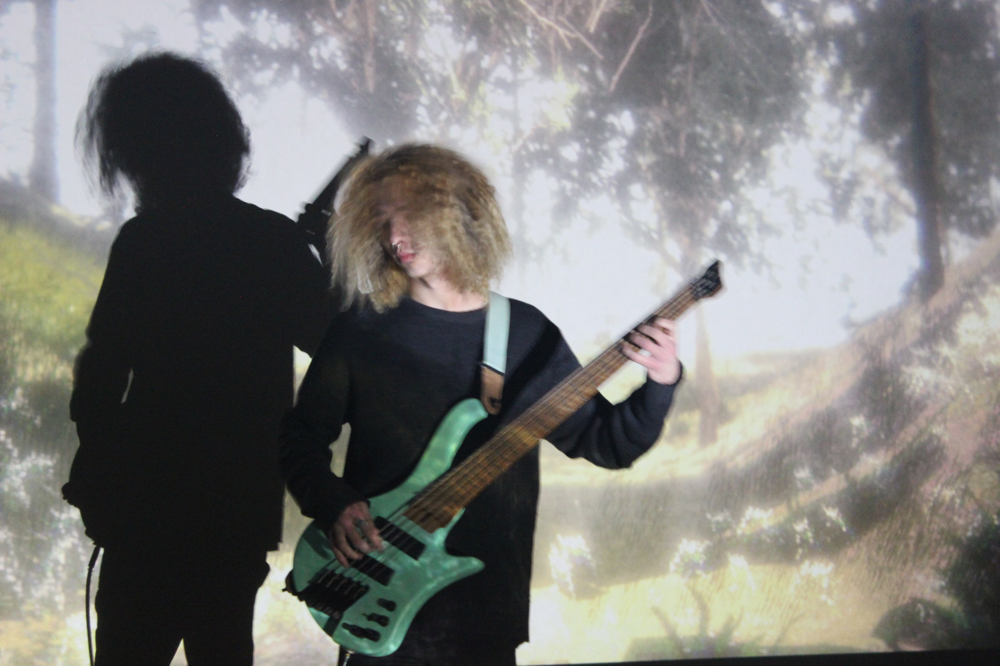

Real time graphics for music gigs. These include camera and audio reactive shaders as well as immersive 3D environments, which in most iterations have been projected behind the bands playing. I originally started developing these for GAFF Edinburgh gigs, but I've since been continuing to create more immersive visuals as part of the group @astridvonderhalen
demo of the visuals hereI'm open to working with other organisations and bands if you're looking for real time visuals. I'm currently based in Leeds but am happy to travel for a gig. Please contact me with any questions and for my rates, I'm happy to answer everything and anything!
I'm interested in experimenting with ways the band and audience can interact with graphics throughout the show, e.g. through the band being able to interact with visuals during the show through a Kinect and specific poses, or audiences on their phones before the band starts. There's lots of potential!





music video visuals by me, created in Unity
